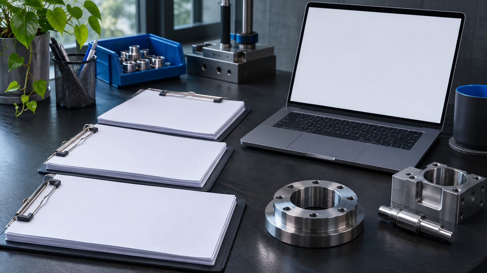
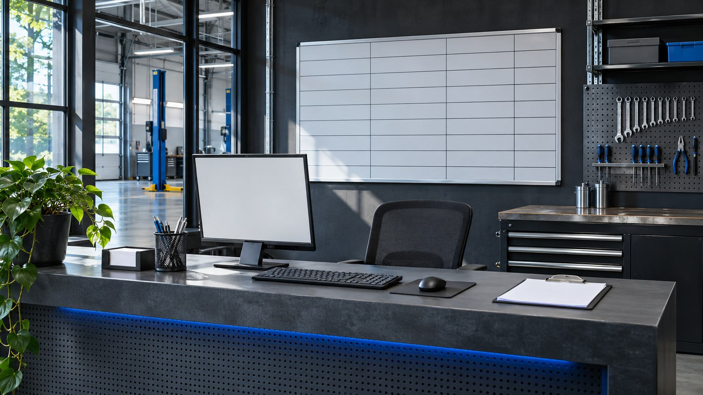

Разобрали путь обращения
От первого звонка до закрывающего акта: выделили статусы и обязательные поля.
Сервис промышленного оборудования / кейс-концепт
Заявки приходят по телефону, в почту и в мессенджер. Менеджер переносит их в таблицу, а мастер узнаёт о выезде в последний момент. В концепте собираем обращения в одну воронку, чтобы у каждого был ответственный и следующий шаг.
От первого звонка до закрывающего акта: выделили статусы и обязательные поля.
Настроили карточку оборудования, ответственного и дату следующего контакта.
Предусмотрели уведомление мастеру и журнал изменения статусов.
Описали права доступа, импорт таблицы и проверку тестовой заявки.


Воронка, карточка заявки и список задач на день. Руководитель видит незакрытые обращения, мастер — данные для выезда.
В концепте показан предполагаемый состав результата, а не завершённый клиентский проект.Обсуждение задачи → структура и прототип → сборка → проверка и передача.
2–3 недели. Точный состав, календарь и условия фиксируем перед началом работ.
Посмотреть похожий концептИтог зависит от объёма, материалов и интеграций.